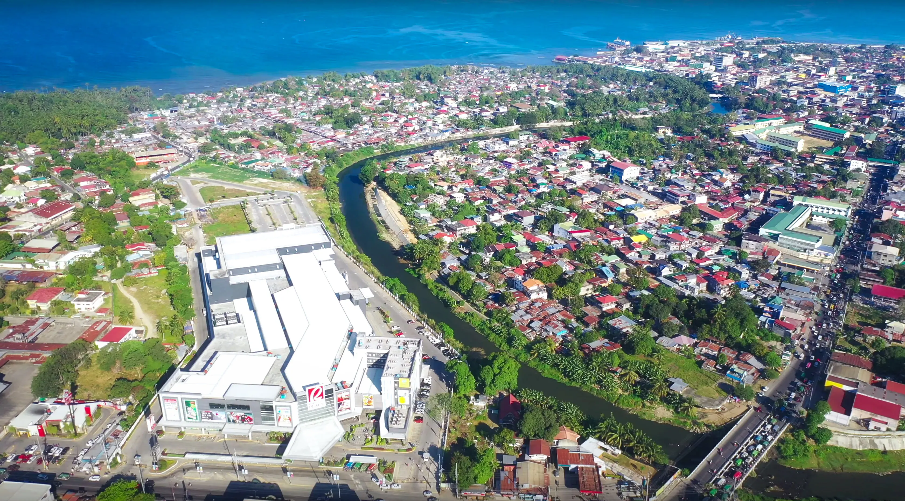

ABOUT
ILIGAN.
Iligan City, known as the “City of Majestic Waterfalls,” is a lively destination in Northern Mindanao, Philippines. It is celebrated for its breathtaking natural scenery, with more than 20 waterfalls flowing through lush surroundings, including the iconic Maria Cristina Falls and the enchanting Tinago Falls. Travelers can enjoy a range of outdoor adventures such as hiking, rafting, and swimming in the cool, clear waters. Beyond its natural wonders, the city is rich in culture and history, featuring heritage houses and historical landmarks that offer a glimpse into its vibrant past and local traditions.

CITY OF ILIGAN
09762872830
09678718677
09569611424
09361626553